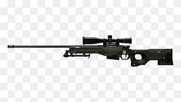
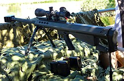
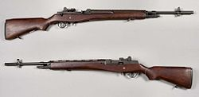

Qual sniper você prefere?
AWM, Barrett M95 ou M14 rifle?

AWM é um fuzil de precisão de ação por ferrolho fabricado pela Accuracy International projetado para usar
cartuchos magnum.AWM também é conhecido não oficialmente como AWSM, que normalmente denota fuzis AWM no calibre
.338 Lapua Magnum.

A M95 é um Fuzil de precisão bullpup de ação por ferrolho, calibre 12,7x99mm NATO e fabricado pela Barrett
Firearms Manufacturing.

O Fuzil M14 7.62 mm, é um fuzil de batalha de fogo seletivo estadunidense que dispara munição 7,62x51mm NATO ou
.308 Winchester